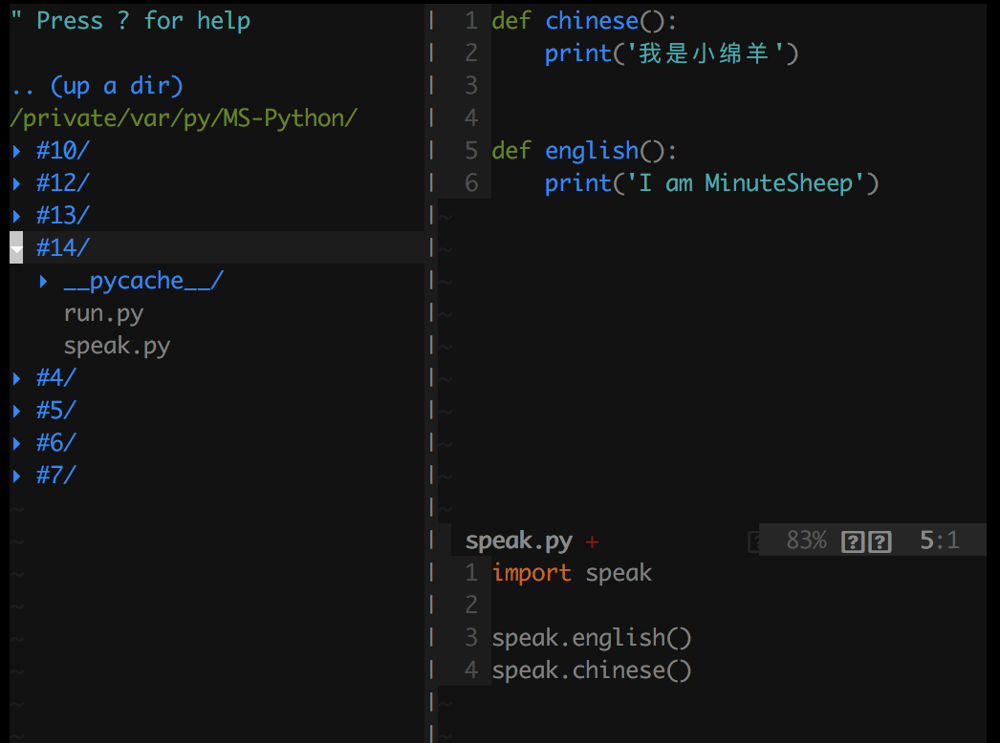

#14 Python模块
前面的文章中，有许多地方都用到了Python的模块，这个到底是个什么神奇的东西呢？让我们来一起盘它！
一、什么是模块
在前几节中，我们已经接触了一些模块：math、random、time等，它们为什么是模块，什么是模块呢？
其实模块就是一个Python文件，一个.py结尾的Python文件。听到这里，萌新肯定蒙圈了，那岂不是我写的每一个Python文件都是模块了？没错！当一段代码需要被重复利用时，你就可以将其作为模块来使用，优点如下：
模块让你更有逻辑的组织你的代码块
将代码写成模块可以是代码重复利用
二、使用模块
Python中有许多内置模块，我们以math模块为例来介绍如何使用模块
直接导入 import
导入math模块 1
2
3
4
5
6
7
8
9
10In [1]: import math # 导入math模块
In [2]: math.sin(30) # 使用模块包含的方法是用 模块.方法
Out[2]: -0.9880316240928618
In [3]: math.cosh(60)
Out[3]: 5.710036949078421e+25
In [4]: math.sin(1)
Out[4]: 0.8414709848078965
间接导入 from......import......
导入math模块的sin方法 1
2
3
4
5
6
7
8
9
10
11
12In [1]: from math import sin # 只导入math模块的sin方法
In [2]: sin(30) # 使用时直接用方法名即可
Out[2]: -0.9880316240928618
In [3]: math.sin(30) # 这种方法是错误的
---------------------------------------------------------------------
NameError Traceback (most recent call last)
<ipython-input-3-9c4797948dd7> in <module>
----> 1 math.sin(30)
NameError: name 'math' is not defined
导入math模块的sin和cos方法 1
In [9]: from math import sin, cos # 将导入的多个方法用逗号隔开即可
导入math模块的全部方法 1
2
3
4
5
6
7
8
9
10In [4]: from math import * # 使用Python中的通配符 * 即可导入math模块的全部方法
In [5]: sin(30) # 使用时也是直接用方法名
Out[5]: -0.9880316240928618
In [6]: cos(30) # 可以看到math中所有的方法都可以用了
Out[6]: 0.15425144988758405
In [7]: sqrt(4)
Out[7]: 2.0
非标准模块的导入 from 路径 import 方法
有时可能需要导入的方法不是标准模块（系统内置模块称为标准模块），可能在其他地方，导入方法有绝对路径和相对路径导入两种，先来弄清绝对路径和相对路径：
- 绝对路径：从盘符开始的路径，比如C文件在E盘中的A文件夹下的B文件夹中，那么C文件的绝对路径为：E:
- 相对路径：从当前目录开始的路径，比如我现在在B文件夹中，那么C文件的相对路径为：.，在相对路径的表示中，.代表当前目录，..代表上级目录
绝对路径导入 1
In [10]: from E:/A/B/C import a # Python中使用/作为路径分隔符
相对路径导入 1
2
3In [11]: from ./C import a
# 上面这段代码的解释：导入当前目录下的C文件中的a方法
三、安装第三方模块
使用源码安装
- 下载安装setuptools模块，下载地址为：setuptools-40.7.3.zip，之后解压后，在当前路径的命令行下输入
python setup.py install，等待安装完毕 - 下载想要安装模块的源代码，大多数模块都可以在官网找见：https://pypi.org，下载源码后解压，在当前路径的命令行下输入
python setup.py install，等待安装完毕，如果出现依赖问题，则安装提示先安装依赖模块，直到安装成功 - 验证是否安装成功，打开IPython的交互界面，输入 import 模块名验证，如不报错则安装成功
注意：想要使用源码安装，必须安装第一步的setuptools模块
使用pip安装（推荐使用pip安装）
通常在安装完Python3以后会自动将pip安装完毕，先来验证下，在命令行输入pip --version，如果输入pip版本等信息，则证明拥有pip，否则请安装源码安装的方式安装pip
- 在命令行中输入
pip install 模块名，之后pip会自动下载并安装模块，等待安装完毕 - 验证是否安装成功，打开IPython的交互界面，输入 import 模块名验证，如不报错则安装成功
注意：如果安装完pip后，在命令行输入pip --version后显示没有这个命令，则需要将pip加入环境变量
使用包管理工具安装（Linux平台、Mac平台）
在Linux平台下，Centos使用yum，Ubuntu使用apt
在Mac平台下，使用HomeBrew包管理工具
四、自己编写模块
在Python中，我们自己也是可以编写模块的。
自己写一个speak模块，里面有chinese和english两种方法，在run.py文件中调用这两种方法：
1 | # speak.py |
1 | # run.py |
1 | # 运行结果 |
目录图片：
